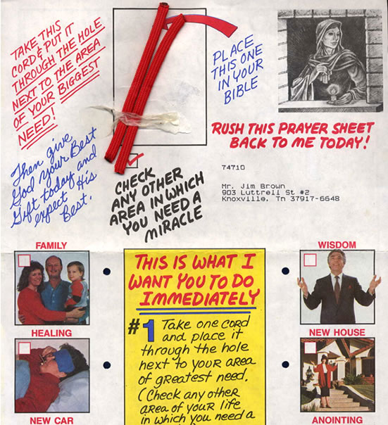
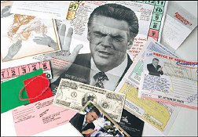
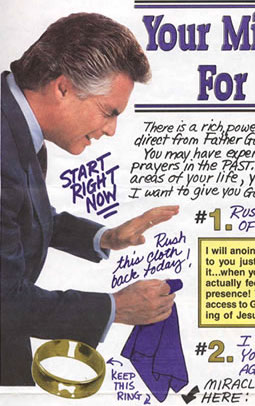
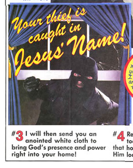
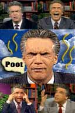

|
 Robert Tilton"Take the enclosed poster of me and put it up on your refrigerator or mirror, somewhere so you'll see it every day. Then for the next 21 days, lay your hand on top of mine and agree with me that you deserve a miracle." In the late eighties and early nineties, television pastor Robert Tilton and his World Outreach Center Church perfected the half-hour religious infomercial. His "Success-N-Life" advertisements, which never actually subscribed to any specific faith, could be seen in all two hundred and fifty three U.S. television markets. For a good long while he managed to avoid the same media scrutiny responsible for bringing down Jim Bakker, Jimmy Swaggart and numerous others. Apart from his frosted pompadour and Howdy-Doody dimples, what really set Mr. Tilton apart from the rest were his insane facial contortions, pregnant pauses, indecipherable babblings, and overarching hyperventilated enthusiasm for collecting money under the auspices of serving the Lord. The only thing more insane than his coke-induced, schizophrenic body language was his ridiculous collection of marketing materials, many of which have secured their rightful place in history as perhaps the most entertaining and curious novelties in the world of faith-based brand identity. These trinkets were snatched up in the early 1990s by prank-calling teenagers or junk mail enthusiasts who had never seen anything like what Tilton would send to their house for free -- gifts given ostensibly for the purposes of instilling in the recipient an obligation to reciprocate financially. The mailings were often accompanied by testimonials: letters from former sufferers of peptic ulcers, layoffs, cigarette addiction, deadly spider bites, rebellious children, infertility, insomnia, and AIDS. They describe (in impish, hand-lettered fonts) how their lives were "turned around" after sending money to Tilton. Inevitably, these people find the act of telling their stories so profoundly moving that by the last paragraph, the caps lock has been fully deployed. My two best friends had just sued me. My landlord had served me with an eviction notice. I was jobless and flat broke. I wouldn't answer the telephone because I knew it would be a bill collector. I was cowering in a chair with all my curtains closed. Heartbreaking love songs gushed from the stereo. I lit a joint. Robert Tilton was praying on TV. I can't explain it, but I heard him say, 'You. Right there. You're smoking a joint.' I dropped the joint and he said, 'You just dropped it.' I started crying. I KNEW IT WAS GOD TALKING TO ME. Envelopes from Tilton were colorful inside and out, and plenty thick. They were described as "redemption packets," containing nearly ten back-to-back pages of typed and scribbled notations resembling the discarded napkin doodlings of a mental patient. Sometimes they contained "magic" pennies, cheap metal crosses on neck chains, rubber bands, complimentary stickers or vegetable seeds, packets of salt, lengths of yarn, swatches of carpet samples, even brown grass lawn clippings in plastic sandwich bags. Each was part and parcel of an intimate religious ceremony the recipient could conduct in the privacy of his or her own home. "Right now this cloth is plain fabric," one fold-out poster reads. A swiftly scribbled arrow sweeps down the page, pointing to a 2-inch square of nylon-cotton blended silk, Scotch taped to a 3x5 index card. "But after you send it back with a $1000 vow, it will be a Miracle Cloth saturated with the presence of God. Open the enclosed package of special oil and anoint the point of your need. Let the Holy Spirit lead you in applying this Miracle Anointing Oil and Miracle Cloth in faith to pictures of your loved ones, to your billfold, to the doorposts of your home, to your body. However he shows you, apply this Miracle Cloth and Anointing Oil in faith for special miracles." At his peak, Tilton was purchasing 5,000 hours of air time each month. His mass-market ministry pulled in an estimated $80 million per year, and his church drew as many as 5,000 worshippers to Sunday service. Tilton gleaned the donations by pitching a narrow, well-oiled version of the Pentecostal prosperity gospel: in exchange for a $1,000 vow, Tilton promised to lobby God for miraculous improvements to your health and finances. According to one survey, he spent 68 percent of his air time asking for money."If Jesus Christ were alive today and walking around, he wouldn't want his people driving Volkswagens and living in apartments," he was quoted as saying. The Trinity Foundation, an aggressive televangelism watchdog group, took notice of Tilton's antics. Armed with a team of private investigators, the Foundation conducted trash sweeps of the dumpsters behind his ministry headquarters, and turned over their findings to Diane Sawyer and ABC Television's PrimeTime Live. ABC broadcast their report in November of 1991, including an interview with a woman who spent two days opening mail for Tilton. She told reporters that she and other workers were instructed to remove any cash, checks, or jewelry from the returned mailers, and throw the prayer requests written to Tilton (caution: spoilers) into the trash can. "You're sat down in a cubicle and given a letter opener," she began. "You have bundles and bundles of mail and a trash bin beside you. You slice open the envelope, take the money out and throw the letter away in the bin. You cannot help but read them. All these letters were like, 'Pray for me,' because they were terminal or their son is terminal or there was no money for food. Desperate situations. There would be like $17, and the letter would say, 'I realize I have to give $2 more than I usually give'. You open enough envelopes to generate $1,000 an hour. It was unbelievable, literally unbelievable." PrimeTime's ratings, which had been low, improved following the Tilton broadcast. Tilton's ministry suffered measurably from the fallout of videotaped evidence depicting thousands of torn-up prayer requests in Hefty-brand garbage sacks slogged away in the dumpsters. In April of 1994, Tilton and his ministry were sued successfully for $1.5 million by Vivian Elliott, a woman who suffered from depression relating to childhood abuse. Vivian had attended a barbecue at her parents' house, after which she went home and wrote a suicide note to her husband and children. She drove to a wooded area and contemplated taking her own life, but while sitting in her car, she heard God tell her to return home -- which she did. The next morning, Vivian saw Tilton's Success-N-Life commercial, during which Tilton announced that he felt someone "depressed" was watching, and he instructed this unidentified person to call the Word of Faith prayer line immediately. Mrs. Elliott felt as though Tilton was speaking directly to her, and that he had been sent by God to reinforce her religious experience from the night before. She called, and in addition to making a large monetary vow, Vivian was eventually persuaded to make a video testimonial for use on Tilton's television program. Although Tilton's representatives later denied any such representation, Mrs. Elliott testified that she was told that any money generated by the use of her testimonial would be used to set up a crisis center to help people who had suffered the same kind of abuse she had. When Vivian finally saw the edited testimonial, she became very upset. Dramatic recreations meant to depict the type of abuse she suffered as a child had been exaggerated to cartoonish, embarrassing levels -- and despite her calls and letters to Word of Faith asking that the testimonial not be shown, Mrs. Elliott received no response. The September 30, 1993 edition of the San Jose Mercury News reported that Tilton was finally going off the air, blaming damage done to his ministry by the information brought to light by PrimeTime Live. According to the article, "the ABC report alleged that Tilton never prayed personally over each letter as promised, and that a processing company in Tulsa threw out prayer requests after contributions were deposited in the bank." Tilton's lawyer insisted those allegations were incorrect. Tilton's Word of Faith church was sold to the city of Farmers Branch, Texas, for $6.1 million in 1999. The Branch made plans to convert the 13-acre property into a convention center. Tilton used a portion of the money to settle a million-dollar fraud lawsuit filed by his first wife, Marte, in 1996. After he and Marte divorced in 1993, Tilton married evangelist and former beauty queen Leigh Valentine. Valentine then turned around and divorced him two years later, citing constant abuse. He would throw her down stairs, slam her against walls, hurl cordless telephones at her head, drink himself into blind rages (often declaring he was the Pope) and wake up in the night screaming that rats were eating his brain. During divorce proceedings, she cited his constant paranoia and "disguise kits" (fake moustaches, $1200 custom-made wigs) which he'd wear frequently during their first year of marriage. Tilton has since married a Florida woman, Maria Rodriguez. More than ten years
after the collapse of his ministry, he's still reaching millions of television
viewers from his mailing list -- and several years ago his televised informercials
were picked up by Black Entertainment Television. |